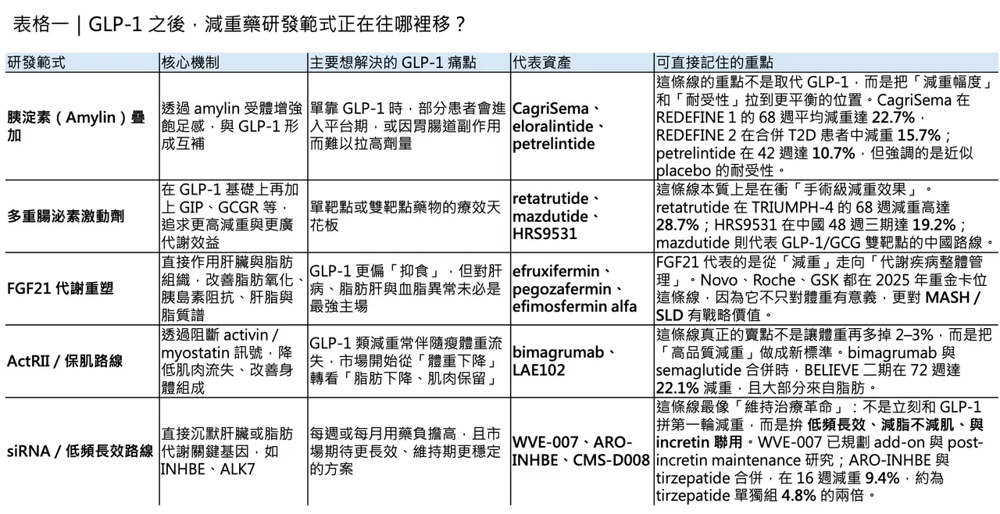
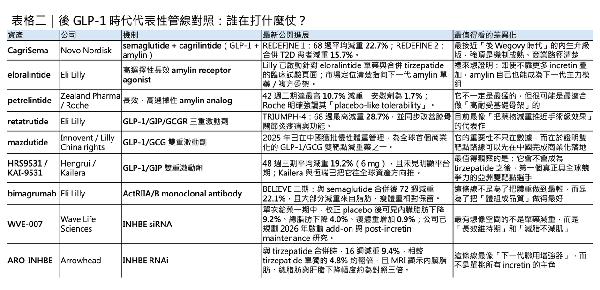

過去幾年，司美格魯肽（semaglutide）與替爾泊肽（tirzepatide）幾乎重寫了肥胖治療的市場想像。它們不只把減重從「意志力問題」拉回醫療管理，更把投資人、藥廠與臨床醫師對減重藥的預期，直接拉高到一個全新標準。
問題是，當 GLP-1 已經證明自己之後，下一階段的競爭，已經不再只是「誰減得更多」，而是「誰能減得更聰明、更久、更有品質」。這也意味著，減重藥物研發正在從單純的食慾抑制，轉向更深層的代謝重塑、身體組成優化，以及併發症分層管理。
真正的範式轉移，不是 GLP-1 被取代，而是 GLP-1 開出的戰場開始分裂成多條主線：有些公司想在 GLP-1 的基礎上疊加新機制，做出更強的體重下降；有些公司想修補 GLP-1 的弱點，例如肌肉流失與胃腸道耐受性；還有些團隊乾脆從肝臟、脂肪組織或基因沉默下手，試圖把減重這件事，從「少吃一點」升級成「整個代謝系統重新調頻」。
如果說 2021 到 2024 年是 GLP-1 單一路線確立統治地位的時代，那麼 2025 到 2026 年，更像是下一波平台競爭正式開打的起點。
第一條新主線：胰淀素（amylin）不再只是配角，而是 GLP-1 後時代最像「基礎骨架」的機制

過去很多人把 amylin 類藥物視為 GLP-1 的輔助選項，但現在越來越多數據在提示，amylin 可能不是配菜，而是下一代減重方案的底層搭檔。
它之所以重要，是因為它不完全依賴 GLP-1 那套以胃排空延緩與中樞食慾調節為主的作用方式，而是透過不同受體路徑增強飽足感，並有機會帶來更好的耐受性與組合彈性。這使得 amylin 類似物特別適合兩類人：一類是對 GLP-1 胃腸道副作用耐受不佳的人；另一類則是已經進入 GLP-1 平台期、但仍希望往上推療效的患者。
最具代表性的資產，當然是 CagriSema。這是諾和諾德把 cagrilintide 與 semaglutide 固定劑量組合起來的產品。根據 REDEFINE 1，CagriSema 在 68 週時達到 22.7% 平均體重下降；在合併第二型糖尿病的 REDEFINE 2 中，平均減重也有 15.7%。這兩組數據已足以證明，amylin + GLP-1 不是理論上的協同，而是真正能把減重幅度往上推的組合。
只是，市場真正想看的不是它能不能做出漂亮數字，而是它能不能在高標準對決裡贏下來。到了 2026 年 2 月公佈的 REDEFINE 4，CagriSema 在 84 週達到 23% 體重下降，但未達成對 tirzepatide 的非劣性主要終點。這件事的意義並不是 CagriSema 失敗，而是提醒市場：amylin 路線成立，但要坐上王座，還得證明自己不只是有效，而是足夠有優勢。
另一個值得注意的名字是禮來的 eloralintide。這是一款高選擇性的長效 amylin 受體激動劑，2025 年發表於《The Lancet》的 48 週二期試驗顯示，不同劑量組在肥胖或過重成人中的平均減重約為 9.5% 到 20.1%，且整體耐受性相對理想。更重要的是，禮來在結果公布時就明確表示，將很快啟動三期研究。這代表大藥廠看中的，不只是它作為單藥的效果，而是它有機會成為後續複方與分層治療中的重要模組。
說得更直接一點，amylin 現在最迷人的地方，不是它已經贏，而是它很像一塊可以和 GLP-1、GIP、甚至其他代謝模組自由拼接的樂高底座。
而 petrelintide（ZP-8396），則讓市場看見 amylin 單藥路線的另一種可能。2026 年 3 月，羅氏與 Zealand Pharma 公布二期結果：在 42 週時，petrelintide 最高劑量組平均減重達 10.7%，顯著優於安慰劑的 1.7%，且呈現接近 placebo-like 的耐受性，沒有嘔吐、也沒有因胃腸道不良事件導致停藥。這個數字如果單看絕對減重幅度，不會比 tirzepatide 或 retatrutide 更驚豔，但它真正的價值在於「可組合性」：羅氏與 Zealand 已明確規劃把 petrelintide 作為單藥與固定劑量複方兩條線同步推進，尤其是與羅氏自家 CT-388 的組合。
也就是說，petrelintide 的角色，很可能不是自己單挑一切，而是成為下一代高耐受、可長期管理的減重方案中的核心搭檔。
第二條主線：多重腸泌素不再只比減重幅度，而是在比「誰更接近手術級效果」

如果 amylin 路線代表的是「更平衡的進攻」，那麼多重腸泌素激動劑代表的，就是「把單藥天花板直接往上掀」。
這條線的思路非常清楚：既然 GLP-1 已經證明中樞食慾與胃腸路徑能顯著改變體重，那再加上 GIP、glucagon receptor（GCGR） 等路徑，是否能把代謝消耗、脂肪氧化、血脂與肝臟指標一起拉進來，做出更接近減重手術的效果？答案看起來是：有可能。
這條路目前最耀眼的旗手，仍然是禮來的 retatrutide。它是一款 GLP-1/GIP/GCGR 三重激動劑，2025 年底 TRIUMPH-4 顯示，在合併肥胖與膝骨關節炎的患者中，68 週平均減重高達 28.7%；到了 2026 年 3 月的糖尿病三期讀出，它在 40 週時也實現最高 15.3% 體重下降，同時 HbA1c 降幅達 1.7% 到 2.0%。
這兩組數據合起來看的意義，不只是它很能減，而是它讓市場真正開始討論：未來是否會出現一類藥物，減重效果已經逼近 bariatric surgery，但又是藥物而不是手術。 當然，retatrutide 的胃腸道副作用仍比市場希望的更明顯，這也代表極致療效通常要付出耐受性的代價。可至少在「把療效天花板再往上推」這件事上，retatrutide 已經把標準重新拉高了一次。
亞洲創新公司也已不只是跟跑，而是開始在特定多重激動劑路線上建立自己的位置。mazdutide 是一個很好的例子。它由信達與禮來合作開發，是全球第一款在中國獲批用於體重管理的 GLP-1/GCGR 雙重激動劑。這個產品的象徵意義很強：它不是簡單複製 semaglutide，而是從一開始就走「GLP-1 加上 glucagon」的雙機制路線，目標不只是抑食，還包括能量消耗、肝脂代謝與體組成調節。某種程度上，mazdutide 代表著一件事：下一代減重藥的競爭，已經從美國單極市場，變成全球多中心同步演進。
同樣值得關注的還有恆瑞與 Kailera 推進的 HRS9531（KAI-9531）。這是一款 GLP-1/GIP 雙重激動劑，在中國的 48 週三期肥胖研究中，6 mg 組平均減重達 19.2%，且尚未明顯進入平台期；公司也已在 2025 年向中國 NMPA 提交上市申請並獲受理。這條線的真正看點，不只是數字本身，而是它意味著 tirzepatide 式雙靶點藥物未來不會只有單一全球巨頭能供應。當越來越多區域玩家在雙靶點與多靶點路線上跑出成熟數據，GLP-1 之後的市場競爭，很快就會從「誰先證明有效」轉成「誰能以更低成本、更好供應、更精準分層搶下份額」。

第三條主線：FGF21 崛起，標誌減重藥開始從「少吃」走向「代謝重塑」
如果說 GLP-1 的核心語言是「食慾抑制」，那麼 FGF21（fibroblast growth factor 21） 的語言就更像是「代謝重編程」。這也是為什麼 FGF21 在 2025 到 2026 年會突然成為大藥廠掃貨焦點：因為它的價值並不只在減重，而在於它能同時動到肝脂肪、脂質譜、胰島素阻抗、炎症與纖維化。它不是最典型的「減重針」，卻很可能是下一階段代謝治療裡最重要的協同模組之一。
資本流向已經說明一切。2025 年 10 月，Novo Nordisk 宣布以約 47 億美元收購 Akero Therapeutics，把其三期 FGF21 類似物 efruxifermin（EFX） 納入版圖；2025 年 9 月，Roche 宣布收購 89bio，拿下其三期 FGF21 類似物 pegozafermin；更早之前，GSK 也在 2025 年 5 月宣布以 12 億美元前金 + 8 億美元里程碑 收購 efimosfermin alfa。這三筆交易擺在一起看，已經不是單純的肝病佈局，而是大藥廠一致認定：FGF21 是後 GLP-1 時代最值得提前卡位的代謝平台之一。
這條線最值得理解的地方在於，它改變的不是單純的熱量攝入，而是整個代謝器官之間的協調關係。也因此，FGF21 類藥物特別適合那些不只是要瘦，而是伴隨 MASH / SLD、嚴重高三酸甘油脂、胰島素阻抗 的患者。這也意味著未來的減重市場很可能出現更清楚的分流：如果一個患者主要問題是食慾與體重本身，GLP-1 或多重腸泌素也許仍是主軸；但如果患者同時有顯著肝病或脂質異常，FGF21 類療法的角色就會被迅速拉高。
這種從「大一統減重藥」走向「代謝表型分層治療」的趨勢，本身就是範式轉移的一部分。
第四條主線：ActRII 路線的真正野心，不是讓你再瘦一點，而是把「減脂不減肌」做成新標準
GLP-1 類藥物的成功，讓市場第一次真正面對一個以前不夠被重視的問題：減重不等於高品質減重。體重下降固然重要，但如果瘦下來的同時流失了太多骨骼肌，對長期代謝健康、運動能力、跌倒風險與老年化結局，都可能不是好消息。
這也是為什麼 ActRII（activin type II receptor） 路線會在 2025 到 2026 年突然升溫。它瞄準的不是食慾，而是身體組成（body composition）。
最具代表性的資產，是禮來麾下的 bimagrumab。2026 年發表於 Nature Medicine 的 BELIEVE 二期結果顯示，bimagrumab 單藥在 72 週時平均減重約 10.8%，而且減去的重量主要來自脂肪；semaglutide 單藥則約 15.7%；兩者高劑量合併後，平均減重可達 22.1%，且大部分減重來自脂肪，瘦體重得到保留。
這條數據真正有殺傷力的地方，不在於絕對數字已經超越所有 GLP-1，而在於它給出了一個非常明確的新命題：未來減重藥不只是看體重曲線，還要看脂肪與肌肉是怎麼變的。
但這條路的商業節奏也沒有市場想像中那麼線性。2025 年 9 月，禮來出於「戰略業務原因」終止了一項 bimagrumab 與 tirzepatide 聯用、針對合併第二型糖尿病肥胖患者的中期試驗。這件事提醒市場：即使概念再漂亮、數據方向再對，真正走到產品化時，仍要考慮臨床定位、成本、開發優先順序與商業資源配置。
也就是說，muscle-sparing 這個命題幾乎不會消失，但誰能先把它做成主流產品，還遠沒有定局。
在這條賽道裡，來凱醫藥的 LAE102 是一款選擇性靶向 ActRIIA 的單抗，2024 年已和禮來建立臨床合作，2025 年 5 月在美國完成肥胖適應症一線受試者給藥。相較於 bimagrumab 同時靶向 ActRIIA / ActRIIB 的較廣泛策略，LAE102 想驗證的是：更精準的 ActRIIA 選擇性，能否在保肌與減脂之間找到更好的平衡。 這條線現在還很早，但它的重要性在於，它代表「高品質減重」已經從市場討論，開始走向真正的臨床產品分化。
第五條主線：siRNA 讓減重藥開始有了「低頻維持治療」的未來想像
如果說 GLP-1 與多重激動劑代表的是「每週打一針、持續壓制」，那麼 siRNA 給市場的想像，則是另外一條完全不同的時間維度：能不能用更低頻率的方式，直接從基因表達層面重塑脂肪與代謝？
這條線之所以迷人，是因為它天然具備長效潛力，而且很多標靶都指向肝臟或脂肪組織的源頭機制，而不是中樞食慾本身。這意味著，siRNA 可能更適合被用在兩種場景：一是與 incretin 類藥物聯用，強化脂肪與內臟脂肪重塑；二是作為 GLP-1 之後的維持治療，降低反彈。
目前這條線最受矚目的目標之一，是 INHBE。Wave Life Sciences 的 WVE-007 就是典型代表。公司在 2025 年底公布第一批一期人體資料，顯示單次給藥後即可看到體組成與代謝方向上的正面訊號，並已規劃在 2026 年啟動更高 BMI 與合併症患者的 2a 多劑量研究，同時探索作為 incretin add-on 與 post-incretin maintenance 的新試驗。
這個設計非常有指標性，因為它等於直接承認：未來減重藥物不見得是「單藥終局」，而更可能是一套從 induction 到 maintenance 的長期管理系統。
Arrowhead 的 ARO-INHBE 則把這條線往更臨床結果導向的方向推了一步。根據公司 2026 年 1 月公布的中期資料，在肥胖合併第二型糖尿病患者中，ARO-INHBE + tirzepatide 在 16 週時平均減重 9.4%，而 tirzepatide 單獨組約為 4.8%；更重要的是，MRI 顯示內臟脂肪、總脂肪與肝脂肪的下降幅度大約可達對照的三倍。
這組資料的真正訊息其實不是「它比 tirzepatide 厲害」，而是：siRNA 很可能最適合扮演一個提升體組成品質、降低內臟脂肪負荷的增強器，而不是一開始就單挑整個減重市場。這些項目都還很早，但方向很清楚：減重藥的未來不再只有腸道與中樞，肝臟基因、脂肪訊號與低頻 RNA 藥物，正在變成另一個完全獨立的創新平面。
真正的範式轉移，不是 GLP-1 退位，而是減重這件事終於開始變得更像「精準醫療」
總結來看，GLP-1 並沒有結束，相反地，它更像是所有新方案的地基。真正改變的是市場對「好減重藥」的定義。
以前，減重藥主要比的是能不能讓病人吃少一點、體重掉快一點；現在，競爭的維度已經明顯變成五件事：
🔹 減多少
🔹 減的是脂肪還是肌肉
🔹 能不能顧到肝臟與心腎代謝
🔹 耐受性夠不夠好
🔹 能不能用更低頻率長期維持
也就是說，這個市場正從單一體重數字導向，走向更成熟的代謝表型管理。未來最有可能出現的，不是某一顆藥把所有人都吃下，而是越來越像腫瘤與免疫領域那樣的分層治療：
🧩 有些患者需要的是極致減重，這時 retatrutide 或更激進的多靶點方案更有吸引力；
🧩 有些患者在意的是耐受性與可長期使用，amylin 路線可能更適合；
🧩 有些患者最大的風險來自肝病、脂質異常與胰島素阻抗，FGF21 類藥物可能更有戰略地位；
🧩 有些患者則會把「減脂不減肌」視為第一優先，ActRII 路線才會真正打中需求；
🧩 而 siRNA 更可能成為維持與增強體組成管理的下一層工具。
GLP-1 之後，市場不是變簡單，而是變成熟了。
從這個角度看，現在的減重藥研發，已經不是一場單線衝刺，而是一場多機制、多器官、多時間尺度的系統戰。真正會贏的公司，未必是先做出下一個爆款的人，而更可能是最早理解這件事的人：肥胖不只是體重問題，減重藥也不該只是一把抑制食慾的刀。
參考資料：
[0]: 各公司官網＆公開資料
[1]:
Youtube
Obesity has emerged as one of the most significant public health challenges of the 21st century, affecting over 42% of United States adults and contributing to substantial morbidity, mortality, and healthcare costs.[1] The recognition of obesity as a chro
www.ncbi.nlm.nih.gov
"Obesity Medications: Evidence-Based Management - NCBI"
[2]:
Eloralintide, a selective amylin receptor agonist for the treatment of obesity: a 48-week phase 2, multicentre, double-blind, randomised, placebo-controlled trial
Eli Lilly.
pubmed.ncbi.nlm.nih.gov
[3]:
www.novonordisk.com
https://www.novonordisk.com/content/dam/nncorp/global/en/investors/irmaterial/annual_report/2025/q4-2024-investor-presentation.pdf
www.novonordisk.com
[4]:
Roche enters into an exclusive collaboration & licensing agreement with Zealand Pharma to co-develop and co-commercialise petrelintide as a potential foundational therapy for people with overweight...
Agreement allows for a range of potentially best-in-class therapy options as monotherapy and fixed dose combination with Roche`s lead incretin asset CT 388Collaboration will complement Roche's...
www.roche.com
[5]:
reuters.com
https://www.reuters.com/business/healthcare-pharmaceuticals/lillys-next-gen-obesity-drug-shows-reduction-blood-sugar-levels-trial-2026-03-19/
www.reuters.com